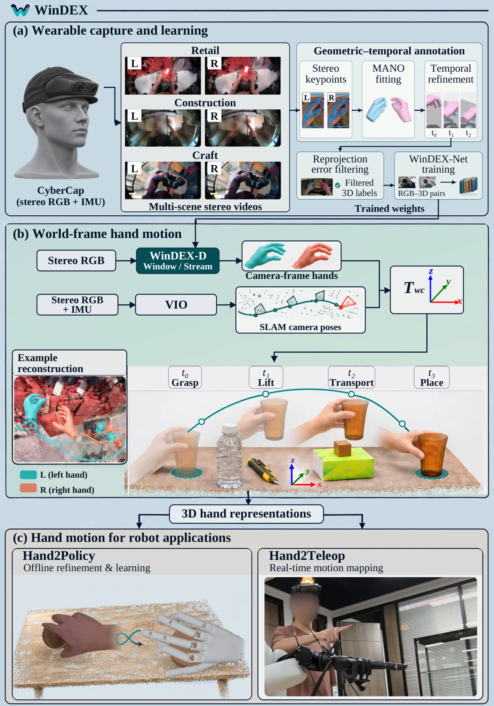
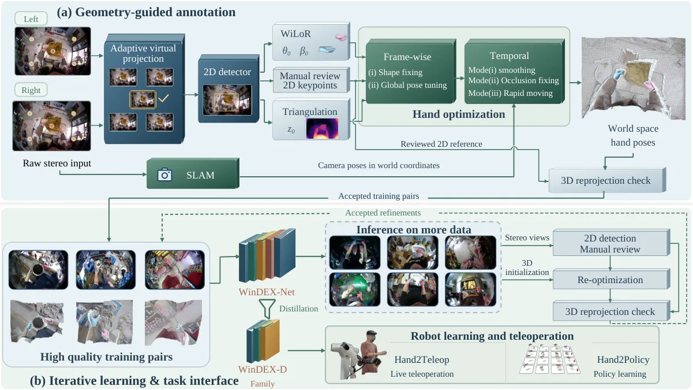
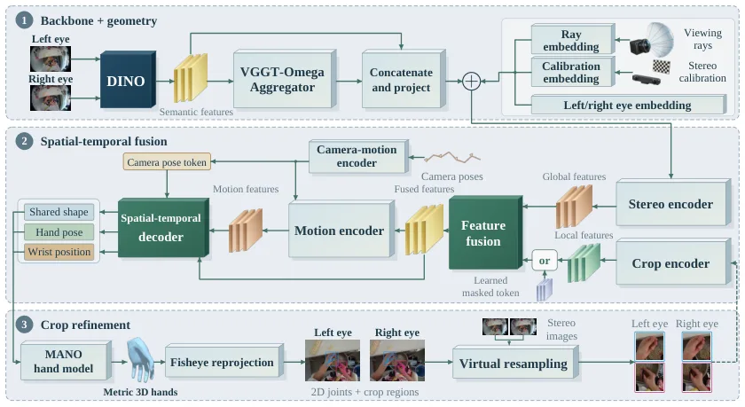
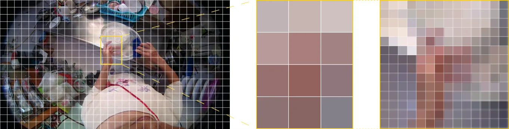
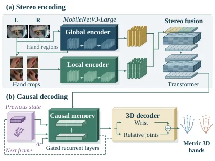
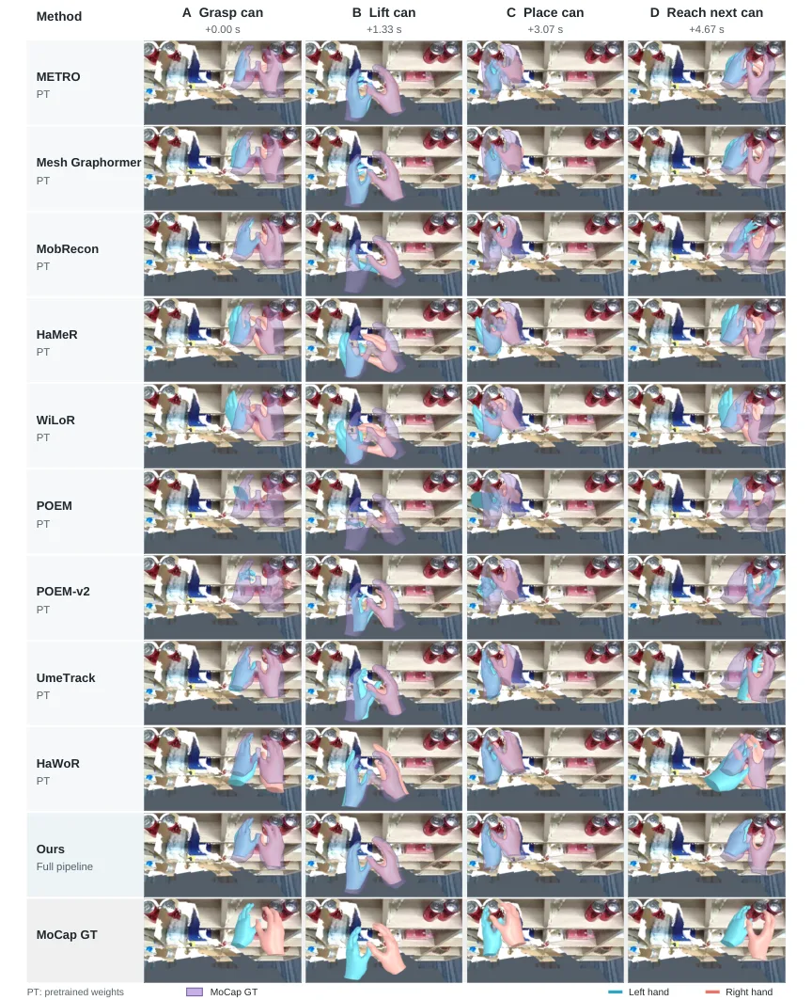

WinDEX：野外米制三维手部运动重建，用于灵巧遥操作与策略学习
WinDEX: Metric 3D Hand Motion Reconstruction in the Wild for Dexterous Teleoperation and Policy Learning
一句话：用立体鱼眼 + IMU 把「手在哪、手指怎么动」直接解到世界系，再把这套标注蒸馏成能跑 171 FPS 的因果模型去带遥操作和策略学习。
wrist error
W-MPJPE
success rate
throughput
作者、单位与技术谱系 · Research context
作者与单位
研究脉络
- WiLoR（单目手部定位与重建）方法上游关系：WinDEX 直接用它做标注初始化的手势与形状预测，并作为需要微调的强基线之一。[WinDEX 原文 §IV-C2 与 Table IV]
- HaWoR（世界系手部运动重建）方法上游关系：把单目手部重建推进到世界坐标系，是本文最直接的对标；WinDEX 用立体基线替换其尺度来源。[WinDEX 原文 Table V 与 §VII-C]
- ManipTrans（轨迹模仿器）下游接口关系：本文不自研策略，而是把重定向后的轨迹交给该模仿器做 RL 参考，用来验证数据可用性。[WinDEX 原文 §VI-B、§VII-D]
合作网络
- CityU HK × CyberOriginCity University of Hong Kong → CyberOrigin关系：共同署名[arXiv 摘要页]
- WinDEX → cuVSLAMWinDEX → cuVSLAM关系：技术依赖（外部位姿源）[WinDEX 原文 §IV-B]
- WinDEX → VGGT-Omega / DINOv3WinDEX-Net → VGGT-Omega、DINOv3关系：预训练骨干依赖[WinDEX 原文 §V-A1 与 Table II]
作者与单位取自论文首页标注；WiLoR/HaWoR/ManipTrans 的关系取自正文显式引用与实验对照，属原文事实；「通讯作者」按作者位次推断，论文未标通讯符号，故在正文中已注明推断性质。
方法本质拆解 · What actually changed
是不是微调？
主体是从零训练的新网络，但重用了两类预训练权重：骨干是 VGGT-Omega 的立体深度分支（取第 11 层中间特征）加 DINO/DINOv3 语义特征，裁剪分支的 DINO 编码器被冻结。训练用四张 RTX 4090、AdamW + bf16，教师骨干学习率是头部的一成；蒸馏阶段先用缓存特征对齐、再端到端微调。
有没有额外约束？
约束写成一个 MAP 能量：双目光束法重投影（Geman–McClure 鲁棒核）、立体初始化手腕的 L2 锚、DPoser-X 手势先验、二阶时序差分平滑、以及形状 β 的 L2 正则；整段录制共享一个 β，防止形状去吸收深度误差。网络侧再加视线、标定、眼别条件化和共享形状解码，几何约束被显式编码进特征。
推理/后端到底做了什么？
推理是纯前馈加固定次数的手部裁剪迭代（生产用 2 次，可到 4 次），没有全局 BA、没有回环、也没有测试时优化；相机位姿由外部 cuVSLAM 先算好并冻结。离线模型用 32 帧窗、步长 16、重叠交叉淡化；因果模型每次只吃一对立体帧并携带循环状态。所谓「世界系」只是把手部结果与 SLAM 位姿做一次刚体复合。
方法本质是什么？
本质是把「尺度从哪来」这件事从网络先验换成了物理基线：米制来自 60.7 mm 立体基线与标定投影，全局一致性来自视觉惯性里程计，网络只负责在鱼眼、遮挡、快速运动下把这两条几何证据解释好。它改变的是单目手部重建的尺度与坐标系不确定性，代价是世界系精度被 VIO 的 0.150 m ATE 封顶。
输入是立体鱼眼 + IMU 与人工复核的 2D 关键点，米制来自标定基线、世界系来自 cuVSLAM，网络学的是把这两条几何证据在遮挡与鱼眼边缘下解释好，直接产出可重定向的米制手部轨迹。

桥接价值Bridge
桥接价值
这篇把「3D 几何重建」和「具身策略学习」之间的最后一公里补上了：输出不是相机系里的手部网格，而是重力对齐世界系里的手腕轨迹 + 手指关节角，可以直接做机器人逆运动学重定向。它桥接的是三条线——可穿戴采集、几何–时序标注、以及把教师模型蒸馏成能上机的因果模型。对我们的意义在于，可靠状态估计不只是给机器人自己定位，也可以是给人手提供世界系真值，让人类演示变成机器人可用的动作监督。
方法与模块Method
方法摘要
系统分四段。采集端 CyberCap 提供 1920×1200、30 fps 的同步立体鱼眼（标定基线 60.7 mm）与同钟 300 Hz IMU。标注端先渲染 5 个虚拟针孔视角跑 YOLO11-pose 与 ViTPose，按置信度融合 2D 关键点；再用 WiLoR 与立体三角化深度做初始化，分两阶段优化 MANO：第一阶段逐帧拟合（形状 β 用 64 个高置信帧平均后固定），第二阶段按平滑/遮挡/快速运动三种模式调时序权重，最后用 15 px 重投影阈值筛选。网络端 WinDEX-Net 用 VGGT-Omega 中间层几何特征 + DINO 语义特征，按视线、标定、眼别条件化，做跨眼注意力与手部裁剪迭代精化。部署端蒸馏成 116M 的离线窗模型与 8.9M 的因果 GRU 流模型。
可迁移模块
第一是「几何筛选当标注质量闸门」：用重投影误差 ≤15 px 这一条与模型无关的几何判据，把模型预测、优化结果和人工复核串成一个可审计的循环，这比用另一个网络的置信度打分稳得多。第二是「冻结位姿因子」：把 SLAM 相机轨迹当作固定输入，让手部优化只解手势与手腕，避免位姿和手势互相解释——我们的多传感器标定与外参估计也可以照这个思路拆变量。第三是「按位姿条件化时序编码」，用相机轨迹把头部运动和手部运动分开，这一条可以直接搬到动态场景的点跟踪或多目标跟踪里。

证据Evidence
关键证据与数字
光学动捕对照（排除在训练与迭代标注之外）：WinDEX-Window 腕部误差 15.70 mm、MPJPE 16.68 mm、PA-MPJPE 7.82 mm、抖动 3.15 m/s²；同表最优微调基线 HaWoR 为 31.87 / 23.48 / 9.45 / 5.50，即腕部误差约减半。世界系上 WinDEX-Window + cuVSLAM 的 W-MPJPE 37.29 mm、WA-MPJPE 17.69 mm、RTE 2.00%，相对微调 HaWoR 的 97.65 / 40.91 / 2.83 分别降 61.8%、56.8%、29.3%。野外 2D 参考上重投影误差 14.5 px，对比微调基线 22.42–26.72 px；速度上离线的 WinDEX-Window 43.61 FPS（2 次裁剪）、因果流模型 171 FPS、教师 WinDEX-Net 9.50 FPS。下游 Hand2Policy 在五个物体 × 两种手上平均成功 61%，WiLoR 参考 8%、HaWoR 参考 17%，即 7.6× 与 3.6×。
边界与下一步Limits & Next Step
边界与风险
作者明确承认三点：长时间遮挡会同时丢失关节角与位置的视觉约束，当前只在遮挡期保持上一帧高置信位姿、无法恢复未观测关节；训练全部来自 CyberCap，光学、基线与佩戴方式的跨设备泛化未验证；没有把物体几何与接触纳入遥操作映射。我们的待核验项：世界系误差的 0.150 m ATE / 11.69° 姿态误差直接进结果，重力对齐是靠 VIO 初始段估计稳定后才可信，那之前的轨迹如何处理文中未量化；标注飞轮每一轮都用同一套 15 px 阈值，误差是否会在轮次间累积缺少独立曲线；成功率只在 5 个物体、每配置 10 次试验上给出，置信区间较宽。
下一步实验
最小实验一：在我们自己的手持/头戴序列上，固定同一个手部检测与 MANO 拟合器，只替换世界系输入（纯单目深度 / 立体三角化 / 视觉惯性先验），比较毫米级腕部误差、标注通过率与人工复核工时，验证「冻结位姿 + 几何筛选」是否真的比端到端回归省人力。最小实验二：把它的「按位姿条件化」搬到我们的多目标动态场景，用 VIO 轨迹把相机自运动与目标运动解耦，看 3D 点跟踪的 EPE 与轨迹抖动是否同步下降。







